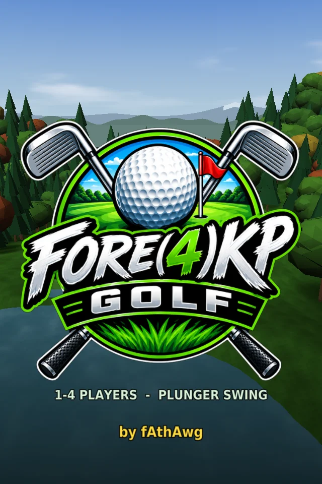

Pull the plunger, let it fly. Three original 9-hole courses, 1–4 players, wind, water and sloping greens — built to run natively on the AtGames Legends Pinball 4K through General Loader 2.0.
Free to play · tips keep new courses coming · 2.7 MB zip ·All versions & changelog
A full golf game that uses every screen and control on the cabinet.
Pull back to set power, ease it to fine-tune, let go to swing. Prefer buttons? The classic 3-tap meter is there too.
Turn-based play with coloured balls, 3-letter initials and best rounds saved for every course.
The course on the playfield, a full-colour shot dashboard on the DMD, scorecard and hole map on the backglass.
Wind that changes every hole, lies, elevation, trees, bunkers, water, and a flagstick you can chip in off.
No timing — just aim and set strength, with a landing marker that follows your pull. Great for guests.
A first-launch setup records whatever your buttons and plunger actually send, so it works on your 4KP as-is.
27 holes, all with pinball names. More courses are on the way.
Tall pines, lakes and big drops — elevated tees, blind crests and a mountain-top green.
Links golf with palms, dunes and open ocean along every hole. The beach plays as sand.
Target golf among mesas, saguaros and oasis ponds. Boulders bounce hard; cactus knocks you down.
About two minutes with a USB stick.
forekp.external folder on the root of your USB stick:
/external/forekp/forekp.elf
/external/forekp/forekp.png
/external/forekp/forekp.xml
/external/forekp/forekp.ini
/external/forekp/README.txtPicture upside down? Use Pause › Flip screen 180, or set playfield_rotation = 270 in forekp.ini. Every option is listed in the included README.
Up and running? If Fore(4)KP Golf earns a spot on your cabinet, you can buy fAthAwg a round.
♥ DonateSuggested layout — the setup screen lets you choose your own.
| D-pad left / right | Aim (hold to turn faster) |
| D-pad up / down | Longer / shorter club |
| Plunger | Pull to set power, let go to swing |
| Forward nudge | Fire (meter swing) |
| Start | Start game / pause menu |
| Menu (hold 2 s) | Quit the game |
Pull back for power; ease forward or back to fine-tune. The shot goes when you let go. Release while the marker is in the green zone of the tempo bar for a straight shot.
Tap 1 starts, tap 2 sets power, tap 3 on the line for accuracy — early hooks, late slices. In Easy mode, just two taps.
Fore(4)KP Golf is free and always will be. If it's earned a spot on your cabinet, a tip helps fund new courses and more 4KP games.
♥ Donate with PayPalFound a bug? Open an issue and attach forekp.log and forekp-input.log (Pause › System Info shows where they are).